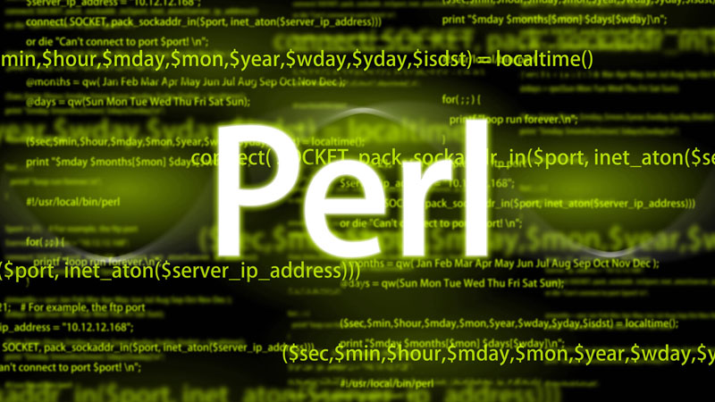

Lenguajes de Programación
Se le conoce como lenguaje de programación a un programa destinado a la construcción de otros programas informáticos. Su nombre se debe a que comprende un lenguaje formal que está diseñado para organizar algoritmos y procesos lógicos que serán luego llevados a cabo por un ordenador o sistema informático, permitiendo controlar así su comportamiento físico, lógico y su comunicación con el usuario humano.
| # | Tipo | Imagen | Concepto | 1 | JavaScript |  |
Se utiliza para gestionar el comportamiento de las páginas web. Con él, los codificadores y programadores pueden crear elementos web dinámicos, tales como mapas interactivos, gráficos animados, botones en los que se pueda hacer clic y mucho más. | 2 | Phyton |  |
Es otro lenguaje de programación para propósitos generales, el cual permite a los desarrolladores utilizar varios estilos de programación diferentes al crear programas. Se emplea para el desarrollo de Back end, ciencia de datos y desarrollo de aplicaciones. | 3 | Perl |  | Sigla del inglés Practical Extraction and Report Language, es un lenguaje de programación de propósito general desarrollado originalmente para la manipulación de texto. Se trata de un lenguaje de secuencias de comandos que comúnmente se utiliza para extraer información de un archivo de texto y crear un informe. |
|---|
Lenguajes Bajo Nivel:
Lenguaje de programación
Están diseñados para un hardware específico y que por lo tanto no pueden migrar o exportarse a otros computadores. Sacan el mayor provecho posible al sistema para el que fueron diseñados, pero no aplican para ningún otro.
Ver másLenguajes Alto Nivel:
Lenguaje de Programación
Aspiran a ser un lenguaje más universal, por lo que pueden emplearse indistintamente de la arquitectura del hardware, es decir, en diversos tipos de sistemas. Los hay de propósito general y de propósito específico.
Ver másLenguajes Nivel Medio:
Lenguajes de Programación
Propone lenguajes de programación que se ubican en un punto medio entre los dos anteriores, pues permite operaciones de alto nivel y a la vez la gestión local de la arquitectura del sistema.
Ver más